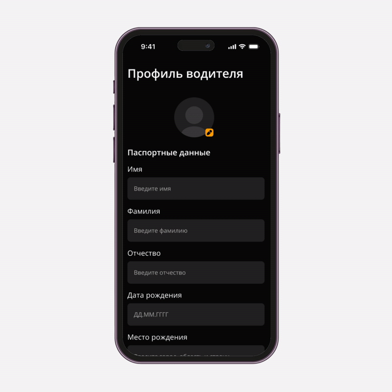

Driver verification
We implemented multi-step driver registration with mandatory document verification to improve service safety and customer trust.
Drivers fill in passport details, license data, vehicle documents, upload photos, and wait for administrator review before accessing orders.
